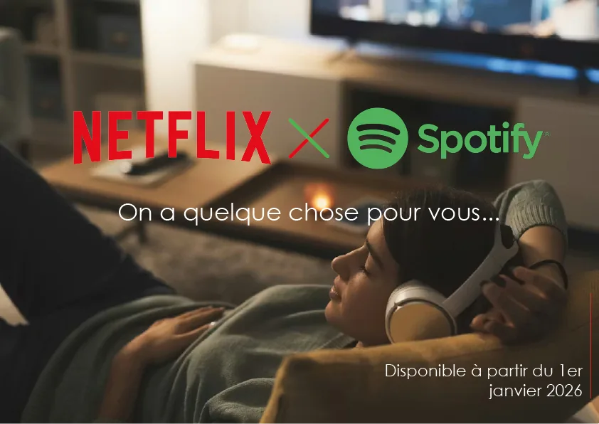

Netflix x Spotify
Recommandation de communication pour une nouvelle fonctionnalité : écouter sur Spotify les musiques de ses films et séries Netflix.
- Période
- Décembre 2025
- Contexte
- SAÉ 102 · BUT MMI 1re année
- Équipe
- 2 étudiants

Le projet
En binôme, nous devions construire une recommandation de communication pour le lancement d’un nouveau produit ou service d’une marque existante. Nous avons choisi Netflix, en commençant par étudier son histoire, ses valeurs, sa communication et ses concurrents.
Notre idée part d’une situation que tout le monde connaît : entendre une musique dans une série sans réussir à la retrouver. Nous avons imaginé une fonctionnalité Netflix × Spotify qui permet d’écouter et d’enregistrer en un clic les musiques de ses films et séries préférés.
- 01
Analyse
Histoire, valeurs et concurrents de Netflix
- 02
Stratégie
Cible, persona et positionnement
- 03
Création
Affiche et post pour les réseaux sociaux
- 04
Présentation
Soutenance orale en anglais
Ma contribution
Nous avons construit ensemble l’étude marketing et la stratégie. Je me suis ensuite davantage chargé de la partie visuelle et de la mise en forme du livrable :
- Idée : identification du besoin utilisateur à l’origine de la fonctionnalité.
- Stratégie : étude marketing, analyse de la cible, persona et positionnement, rédigés en binôme.
- Direction artistique : recherche d’inspirations pour une ambiance cosy et détendue.
- Scénario : participation à l’écriture d’une scène réaliste : un couple qui regarde Netflix dans un salon tamisé.
- Mise en page : mise en page globale du livrable et finalisation de certains éléments visuels.